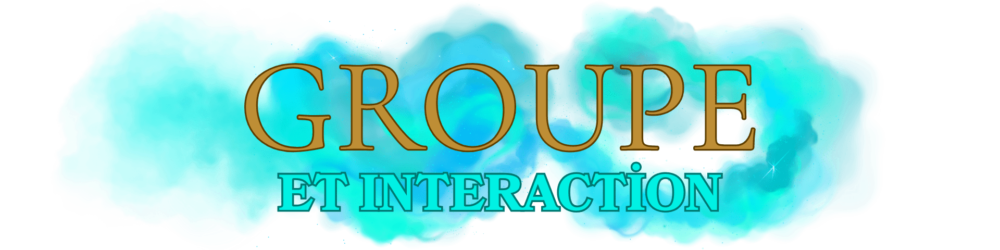

Accueil
Lore du Serveur
Rejoindre le Discord
Règles Générales Lexique RP Respect du Lore Régles Discord
Règles /me Règles Coma Règles Trames Groupes & Interactions
Règles Poudlard Règles Professeurs Règles Médicomages Magies, Sorts & Dons
Règlement Streamers
Règles Générales Lexique RP Respect du Lore Régles Discord
Règles /me Règles Coma Règles Trames Groupes & Interactions
Règles Poudlard Règles Professeurs Règles Médicomages Magies, Sorts & Dons
Règlement Streamers

Interactions entre groupes
- Les interactions avec les autres groupes (forces de l’ordre, organisations, clans RP, etc.) doivent être cohérentes, crédibles et respectueuses du contexte RP.
- Les conflits doivent se résoudre dans le cadre du RP.
- Tout duel ou affrontement doit être justifié (pas de violence gratuite).
Grandes scènes (prises d’otages, attaques, batailles…)
- Lors des grandes scènes, tous les participants sont soumis aux règles de mort RP si le staff juge la scène valide et bien menée.
- Si la scène est jouée correctement et sans incident HRP, les morts RP seront considérées comme définitives.
- Chaque scène majeure doit toujours laisser une porte de sortie afin de préserver l’équilibre et le fair-play.
Conséquences des combats
- Les combats et duels magiques (ex. : Mages Noirs contre Aurors) doivent rester rares, cohérents et crédibles.
- Les abus ou répétitions excessives de combats seront surveillés.
- Une personne tombée dans le coma suite à un combat pourra être considérée comme morte en RP si :
- - La situation est jugée incohérente.
- - Ou si le staff applique une sanction RP en conséquence.
Interactions avec Aurors & Police Magique
- Le respect du Fear RP envers les forces de l’ordre est obligatoire.
- La prise d’otages répétée d’Aurors ou de figures d’autorité publique est interdite.
- Lors d’une confrontation avec les forces de l’ordre, l’équilibre de puissance doit être respecté : un élève ou un petit groupe ne peut pas résister comme s’il était égal à une force organisée.
Fear RP & diversité des scènes
- Le Fear RP doit toujours être respecté. Ignorer la peur face à un danger réel sera sanctionné.
- Variez vos scènes : évitez de vous concentrer uniquement sur des affrontements contre les Aurors.
- Proposez du contenu diversifié (missions, intrigues, alliances, enquêtes, complots…) afin d’enrichir l’univers et maintenir une immersion constante.